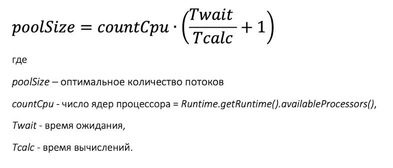
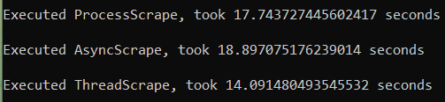

Запуск парсера/скрапера¶
Напишем валидатор данных для скрипта:
def validate_input(cmd, url: str, start: str, end: str):
if start.isdigit() and end.isdigit():
start = int(start)
end = int(end)
else:
raise TypeError("Can not convert str to int")
if start > end and (start < 0 or end < 0):
raise ValueError("Invalid page range")
if url[-1] == "/":
url = url[:-2]
print("Trimmed the trailing '/' in the url")
return url, start, end
Входная точка для запуска скрипта:
if __name__ == "__main__":
print(sys.argv)
if len(sys.argv) == 4 and (refined_args := validate_input(*sys.argv)):
# refined_args = ("https://joyreactor.cc/tag/%D0%BA%D0%BE%D1%82%D1%8D", 298, 300)
a = ProcessScrape(*refined_args)
b = AsyncScrape(*refined_args)
c = ThreadScrape(*refined_args)
a.run()
b.run()
c.run()
for i in BaseScraper._results:
print(i)
else:
print("Not enough parameters")
Полезно также знать, что рассчитывать количество оптимальных потоков для ЦПУ можно по следующей формуле:  Воспольземся cpu_count(), чтобы получить количество ядер процессора. Для своего кода я решил разделить пул потоков поровну между операциями получения страницы и сохранения изображений. Учитывая искуственность задержок для избежания DDoS-а, формула будет не совсем корректной, но в любом случае ограничить количество потоков сверху будет полезно.
CPU_COUNT = cpu_count()
NUMBER_OF_WORKERS = CPU_COUNT if CPU_COUNT < 4 else CPU_COUNT // 2
Результаты работы скрипта на двух страницах: 